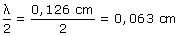
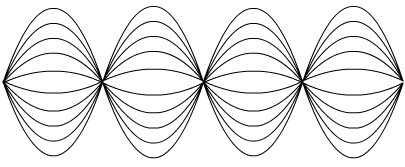

b)  La separación entre nodos o entre vientres es de 0,063 cm. Nodos y vientres se van alternando y = 20 sen (50 x).cos (400 t) Para x = 0 resulta amplitud cero, por tanto en el origen hay un nodo Nodos: x = 0, 0,063, 0,126, 0,189, ...cm El primer vientre está intercalado entre los dos primeros nodos x = (0 + 0.063) / 2 = 0,0315 cm Vientres: x = 0,0315, 0,0945, 0,158, 0,221, ...cm La amplitud de oscilación en los vientres es la máxima posible: 20 cm Perfiles de la onda:  |